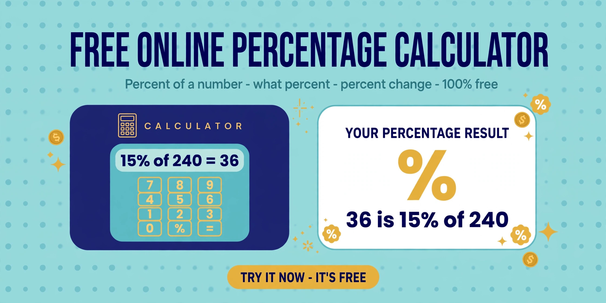

How to Calculate Percentage Online
Discounts, tips, marks, price changes — every percentage question answered in seconds, with the working shown.
October 25, 2026 · 6 min read

Percentages are everywhere: discounts, tips, exam marks, price rises. And almost every question is one of three: what is X% of Y?, X is what percent of Y?, or what is the percentage change from X to Y? Master those three, and every percentage problem you will ever meet is solved.
The formulas are short, but the errors are sneaky — the wrong base, percentage points confused with percent, discounts stacked as if they add. This guide shows you how to calculate percentages online in seconds with the free Percentage Calculator, the exact formulas it uses, and the five mistakes that quietly make people's answers wrong.
The three percentage questions (and their formulas)
Everything reduces to these three. Learn which one your situation needs, and the arithmetic is trivial:
- "X% of Y" — finding a share. A 15% tip on a 240 bill, or 20% off a 750 price tag. Formula: (X ÷ 100) × Y. So 15% of 240 = 0.15 × 240 = 36.
- "X is what percent of Y?" — finding the ratio. You scored 48 out of 200 marks; what is that as a percent? Formula: (X ÷ Y) × 100. So 48 ÷ 200 × 100 = 24%.
- "Percent change from X to Y" — finding the rise or fall. A price moved from 80 to 100; how much did it rise in percent terms? Formula: ((Y − X) ÷ X) × 100. So (100 − 80) ÷ 80 × 100 = 25% increase. A positive answer is an increase, a negative one a decrease.
The Percentage Calculator has one mode for each, shows the formula it applied under the answer, and updates live as you type.
Calculate a percentage in 4 steps
- Open the Percentage Calculator — it runs entirely in your browser, so the numbers you enter are never uploaded anywhere.
- Pick the mode that matches your question. "X% of Y" for discounts, tips and shares; "X is what % of Y" for marks, proportions and conversion rates; "percentage change from X to Y" for price rises, salary changes and growth.
- Type your two numbers. The answer updates live as you type — no button to press, no page reload. If the result looks absurd, you picked the wrong mode or swapped the two numbers.
- Read the formula under the answer. This is the part that makes the tool trustworthy: it shows exactly how it computed the result, so you can follow the working and reuse it yourself.
Worked examples with real numbers
Every number below is computed with the formulas above — check any of them against the tool:
- 15% tip on a 240 bill: 0.15 × 240 = 36. Total to pay: 240 + 36 = 276.
- 48 marks out of 200: 48 ÷ 200 × 100 = 24%.
- 20% discount on 750: discount = 0.20 × 750 = 150; you pay 750 − 150 = 600.
- Price rises from 80 to 100: (100 − 80) ÷ 80 × 100 = 25% increase.
- Price falls from 100 to 80: (80 − 100) ÷ 100 × 100 = −20% (a 20% decrease). Notice the same 20-unit move is 25% one way and 20% the other — percent change always depends on where you start.
Percent change vs percentage points: the table that ends the confusion
This is the most confused idea in percentages. A tax rate moving from 15% to 20% is a rise of 5 percentage points, but a 33.3% relative increase — (20 − 15) ÷ 15 × 100. Percentage points are the plain difference; percent is the difference relative to the starting value:
- 15% → 20%: +5 percentage points · +33.3% relative change
- 50% → 60%: +10 percentage points · +20% relative change
- 4% → 2%: −2 percentage points · −50% relative change (halved, even though the "points" move looks small)
- 10% → 15%: +5 percentage points · +50% relative change — the same 5-point move as the first row, but a much bigger relative change because the base is smaller
Whenever someone quotes a percent change on a percent figure, ask: points or percent? The tool's change mode always gives the relative figure.
5 mistakes that make your percentage wrong
- Dividing by the wrong number in "X is what % of Y". The base is Y — the number AFTER "of". 20 is what percent of 50 = 20 ÷ 50 × 100 = 40%. Divide 50 by 20 instead and you get 250% — nonsense. Read the sentence, find "of", divide by that number.
- Calling a points move a percent move. A rate going from 15% to 20% is not "a 5% increase" — it is 5 percentage points, and a 33.3% increase in relative terms. Saying "5%" understates it by a factor of nearly seven.
- Stacking discounts as if they add. 10% off, then an extra 10% at the till, is NOT 20% off: the second discount applies to the reduced price, so 100 → 90 → 81 — a 19% total reduction.
- Assuming "up then down" cancels out. A 25% rise followed by a 25% fall does not return to the start: 100 → 125 → 93.75, because the fall acts on the bigger base. A stock that fell 50% needs a 100% rise to recover, not 50%.
- Rounding too early. Keep intermediate values unrounded (1 ÷ 3 stays 0.333…) and round only the final answer — early rounding compounds on money and marks.
Frequently asked questions
What is the basic percentage formula?
The three formulas: (X ÷ 100) × Y for a share; (X ÷ Y) × 100 for a ratio; ((Y − X) ÷ X) × 100 for change. The Percentage Calculator applies each one and displays the formula under every answer.
How do I calculate X% of Y quickly?
Move the point two places left to make a decimal (15% → 0.15), then multiply: 0.15 × 240 = 36. For 10% of anything, just move the decimal point one place: 10% of 750 = 75.
How do I find what percent one number is of another?
Divide the part by the whole and multiply by 100: (X ÷ Y) × 100. 48 marks out of 200 = 48 ÷ 200 × 100 = 24%. This is the same calculation as a conversion rate, a success rate, or a pass rate.
What is the difference between percent change and percentage points?
Percentage points are the plain difference between two percent figures: 15% → 20% is 5 points. Percent change is that difference relative to the start: (20 − 15) ÷ 15 × 100 = 33.3%.
Is my data safe in an online percentage calculator?
With ours, yes — everything runs locally in your browser, and the numbers you enter are never uploaded to a server.
Related tools: Percentage Calculator · Discount Calculator · EMI / Loan Calculator · Unit Converter